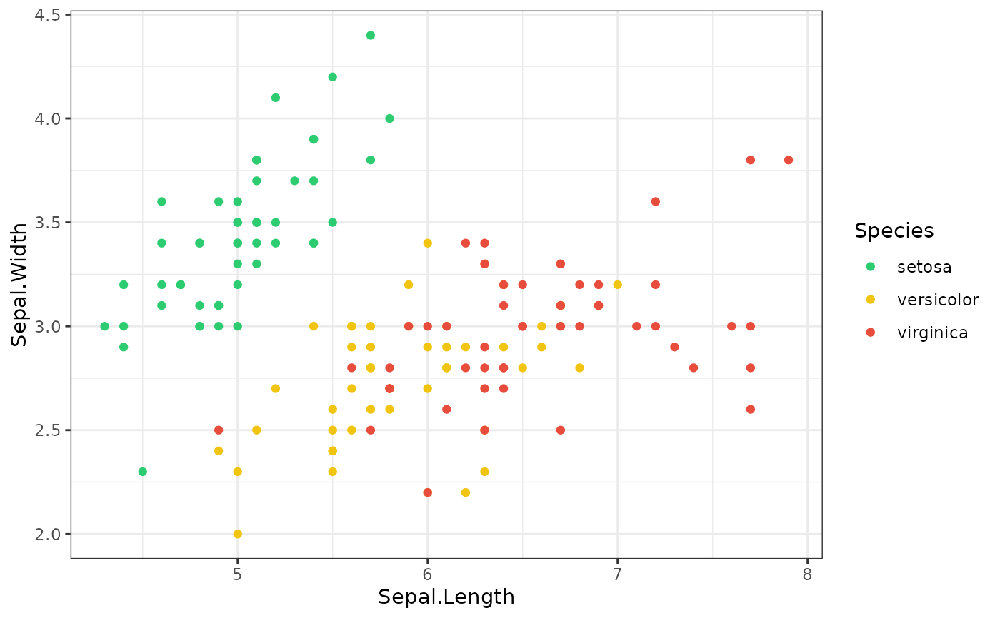

A kggplot theme bundles a ggplot2 theme and (optionally) a colour
palette under one name, so kggplot(..., theme = "inrae") styles the whole
plot. Register your own with kgg_register_theme() and
kgg_register_palette().
Usage
kgg_register_theme(name, theme = NULL, palette = NULL)
kgg_register_palette(name, colors)
kgg_themes()
kgg_palettes()Arguments
- name
Name of the theme or palette.
- theme
A function taking
base_sizeand returning a ggplot2 theme, a ggplot2 theme object, orNULL(ggplot2 default).- palette
Colours of the theme: a character vector of colours, the name of a registered palette, or
NULL.- colors
Character vector of colours (or a function of
n).
Value
kgg_register_*() return name invisibly; kgg_themes() and
kgg_palettes() return the registered names.
Details
A theme argument accepted by kggplot() can be: a registered name; the
name of any theme_<name>() function found on the search path (so
theme = "bw" or a theme from another package works); a ggplot2 theme
object; or a function taking base_size. Set options(kggplot.theme = )
and options(kggplot.palette = ) to change the defaults session-wide.
Examples
kgg_themes()
#> [1] "default" "grey" "minimal" "bw" "classic" "light"
#> [7] "dark" "linedraw" "void" "inrae"
kgg_register_palette("traffic", c("#2ecc71", "#f1c40f", "#e74c3c"))
kgg_register_theme("traffic", ggplot2::theme_bw, palette = "traffic")
kggplot(iris, "Sepal.Length", "Sepal.Width", color = "Species",
theme = "traffic")
